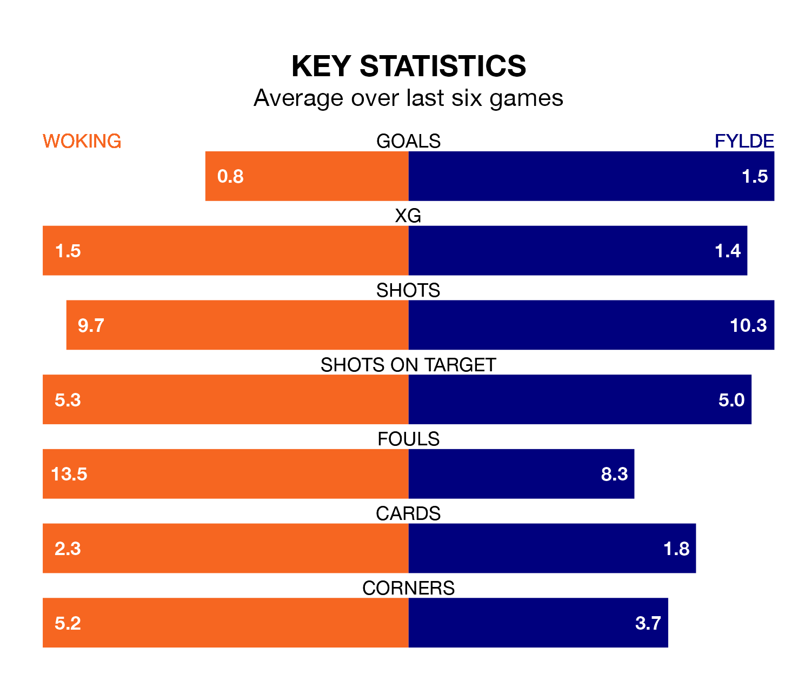

Fylde travel to Woking on Saturday lunchtime in the National League.
The visitors come into the game on the back of a defeat in their last match, having lost to Southend United 2-0 at home.
The Cardinals also lost their last match, 2-0 against York City.
With 46 goals in 45 games so far this season, Woking are the league's second-lowest scorers with 1.0 goals per game. But they are conceding fewer than average too, letting in 55 goals at a rate of 1.2 per game.
Fylde, meanwhile, are above average scorers, with 1.6 goals per game, compared to a league average of 1.5. They have conceded 1.8 goals per game.
The Cardinals are 20th in the table after 45 games, of which they have won 14 and drawn 10, earning 52 points.
The Coasters are four places ahead of the hosts in 16th, with 15 wins and 10 draws putting them on 55 points.
Woking are in mixed form in the National League, with two wins and two draws from their last six games.
With three wins and three losses over that period, the away side's form is slightly better – they have taken nine points from 18, compared to Woking's eight.
Updated: 15:40 (UTC), 18/04/24